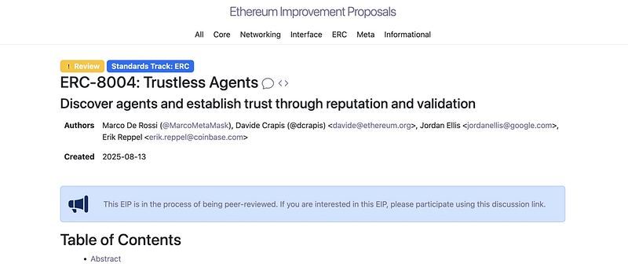

FilOz Blog
Making Services Discoverable with ERC-8004: Trustless Agent Registration with Filecoin Pin

Matt Hamilton (@HammerToe)
I’ve been thinking a lot about agent metadata lately. Not the sexy stuff, not the AI models or the clever algorithms. The boring bit. Where do you put the JSON file that describes what an agent does?
It’s one of those problems that seems trivial until you actually try to solve it properly. You can’t store it on-chain (too expensive). You can’t use regular IPFS pinning (it might disappear). You can’t use AWS (defeats the whole point of decentralisation). So what do you do?
This week, I finally got a chance to properly explore this by registering GitHub’s MCP server as an ERC-8004 agent with Filecoin Pin. Here’s what I learnt.
The Problem
The issue is simple enough to explain: when you register an agent, you need to point to some metadata, a JSON file describing what it does, how to connect to it, what it’s capable of. The tokenURI in ERC-8004 parlance.
You can’t store this on-chain. A typical agent card is 1–2KB of JSON. On Ethereum mainnet, that’s prohibitively expensive. Even on L2s, you’re looking at a chunk of change for every agent registration.
So you store it off-chain and reference it. Which raises the obvious question: where?
Generic IPFS pinning services? They can drop your content. No guarantees. Centralised storage like AWS? Single point of failure, ongoing costs, and frankly defeats the point. Store everything on-chain anyway? Not practical.
I needed something that would actually work long-term.
Filecoin Pin
I’d been aware of Filecoin Pin for a while but hadn’t actually tried it. The pitch is compelling: you get cryptographic proof that your data is being stored. Daily PDP (Proof of Data Possession) checks. Decentralised across Filecoin’s storage network. IPFS compatible so it works with existing tooling.
The key bit is that last part about proof. With generic IPFS pinning, you’re trusting that someone, somewhere, is keeping your content around. With Filecoin Pin, you can actually verify it. Daily proofs that storage providers are holding your data.
That matters for agent metadata. If you’re building something meant to last years, you need more than hope.
What I Actually Built
For this experiment, I took GitHub’s existing MCP server and registered it as an ERC-8004 agent. Not building something new, just making something that already exists discoverable through the registry.
GitHub already runs a public MCP server at https://api.githubcopilot.com/mcp/. It provides repository management, issue tracking, PR tools. The usual GitHub stuff exposed through the Model Context Protocol. It’s real, it’s running, and anyone can use it.
What it didn’t have was an ERC-8004 identity. No way for other agents to discover it. No on-chain registration. No verifiable metadata storage.
So I created an agent card (a JSON file describing the service), stored it on Filecoin Pin, and registered it on the Identity Registry on Base Sepolia. Now it has a verifiable, discoverable identity.
The Agent Card
The agent card is a JSON file that describes the MCP server’s capabilities and how to connect to it:
{
"type": "https://eips.ethereum.org/EIPS/eip-8004#registration-v1",
"name": "GitHub Integration Agent",
"description": "AI agent providing GitHub repository, issue, and pull request management capabilities...",
"endpoints": [
{
"name": "MCP",
"endpoint": "https://api.githubcopilot.com/mcp/",
"version": "1.0.0",
"capabilities": {
"tools": [
{
"name": "repository_management",
"description": "Browse code, search files, analyze commits..."
},
{
"name": "issue_management",
"description": "Create, update, search, and manage GitHub issues..."
},
{
"name": "pull_request_management",
"description": "Review PRs, manage approvals, merge conflicts..."
}
]
}
}
],
"supportedTrust": ["reputation"]
}
This agent card gets uploaded to Filecoin Pin, which returns a CID (Content Identifier). That CID then gets registered on-chain as ipfs://<CID>/github-agent-card.json, effectively creating a verifiable, discoverable identity for GitHub’s existing MCP server.
The Complete Workflow
Here’s how the pieces fit together:
1. Upload to Filecoin Pin
filecoin-pin add --auto-fund github-agent-card.json
This uploads your agent card and returns:
- Root CID — The IPFS identifier
- Dataset ID — For checking PDP proof status
- Storage deal confirmation — Proof it’s being stored
The --auto-fund flag ensures your storage provider wallet has sufficient USDFC (Filecoin stablecoin) to pay for storage.
2. Register on Base Sepolia
cast send 0x7177a6867296406881E20d6647232314736Dd09A \
"register(string)" \
"ipfs://<CID>/github-agent-card.json" \
--rpc-url https://sepolia.base.org \
--private-key $PRIVATE_KEY
This mints an ERC-721 NFT representing your agent on the ERC-8004 Identity Registry.
Why Base Sepolia?
- Low gas costs (it’s an L2)
- Official ERC-8004 reference implementation is deployed there
- Easy to get testnet ETH from faucets
3. Verify PDP Proofs
This shows you the proof status:
Dataset ID: 933
Root CID: bafybeihhal5hlbylkibniig6j72wdrm7lr4nf6z47natleh2jkyosrg7di
Storage Provider: f01234
Status: Active
Last PDP Proof: 2025-01-15 14:32:10 UTC
Next Proof: 2025-01-16 14:32:10 UTC
Daily proofs mean you can always verify your agent metadata is still being stored. This is the cryptographic guarantee that sets Filecoin Pin apart.
4. Agent Discovery
Now any application can discover and use your agent:
# Query the registry
cast call 0x7177a6867296406881E20d6647232314736Dd09A \
"tokenURI(uint256)" 55 \
--rpc-url https://sepolia.base.org
# Returns: ipfs://bafybeihhal5hlbylkibniig6j72wdrm7lr4nf6z47natleh2jkyosrg7di/github-agent-card.json
# Fetch the agent card
curl -s "https://ipfs.io/ipfs/bafybeihhal5hlbylkibniig6j72wdrm7lr4nf6z47natleh2jkyosrg7di/github-agent-card.json" | jq .
The agent card tells them how to connect to the GitHub MCP server and what capabilities are available.
Why This Matters for Builders
This is still very much a work in progress. Everything here is running on testnets, and we’re actively figuring out what the production infrastructure should look like. But having said that, the pattern is already useful for making any existing service discoverable as an ERC-8004 agent with verifiable, persistent metadata.
For Agent Builders
You get:
- Peace of mind — Your agent metadata won’t disappear
- Verifiability — Anyone can check that storage is active
- Decentralisation — No single point of failure
- Standards compliance — Works with ERC-8004 ecosystem
For Agent Users
They get:
- Trust — Can verify agents are legitimate and persistent
- Discovery — Find agents via on-chain registry
- Composability — Combine multiple agents together
- Transparency — See full agent capabilities before using
For the Ecosystem
We get:
- Infrastructure for the emerging agent economy
- Interoperability via ERC-8004 standard
- Long-term viability with provable storage
- Foundation for reputation and validation systems
Whilst these lists look a bit like marketing bullet points, each of these actually matters. The infrastructure piece is what I find most interesting, because we’re finally building the plumbing that makes agent composition practical.
We’d love to have more developers try this out and give us feedback on what works and what doesn’t.
Try It Yourself
So if you want to give this a go, I’ve put together a complete tutorial that walks you through every step:
Register an ERC-8004 Agent with Filecoin Pin Storage
The tutorial includes:
- Complete prerequisites and token setup
- Step-by-step commands with expected outputs
- Screenshot indicators showing what you should see
- Troubleshooting for common issues
- Example agent card you can customise
Everything you need is in the tutorial. It’s designed to take you from zero to a registered agent in about 30–45 minutes. Having said that, if it’s your first time working with Filecoin or Base Sepolia, you might want to give yourself a bit more time to get familiar with the faucets and tooling.
What’s Next?
Well, this is just the beginning. The ERC-8004 standard includes three registries:
- Identity Registry (what I demonstrated here) — Register and discover agents
- Reputation Registry (coming) — Build trust through verified actions
- Validation Registry (coming) — Third-party verification of agent behaviour
Combining these with provable storage creates the foundation for a real agent economy. I think the reputation piece is going to be particularly interesting, because that’s where agents can start to build track records that others can actually verify.
Ideas to Explore
Some things I’m thinking about:
- Multi-agent systems — Agents that discover and compose with other agents
- Reputation building — Agents that accumulate verified track records
- Validator networks — Decentralised verification of agent behaviour
- Agent marketplaces — Discover and use agents based on capabilities and reputation
- Cross-chain agents — Agents that operate across multiple networks
There’s probably a lot more that I haven’t thought of yet. If any of this sounds like something you’re working on, I’d love to hear about it.
The Bigger Picture
I think we’re at an inflection point. AI agents are becoming capable enough to act autonomously, but they need decentralised infrastructure to be truly trustless.
By solving the storage problem with Filecoin Pin and the identity problem with ERC-8004, we’re enabling a new category of applications:
- Autonomous trading agents with verifiable track records
- Code review agents that build reputation over time
- Data analysis agents that can be audited and verified
- Coordination agents that compose multiple specialised agents
- Personal assistants that users actually own and control
The key insight? Agents aren’t just smart contracts. They’re long-lived entities that need persistent, verifiable infrastructure. It has been a challenge working out what that infrastructure looks like, but I think the combination of ERC-8004 and Filecoin Pin gets us pretty close.
Getting Involved
The ERC-8004 ecosystem is just getting started, and we need builders to shape it.
If you want to try this out:
- Follow the tutorial to register your first agent
- Join the ERC-8004 discussions
- Check out the reference implementation
- Explore Filecoin Pin documentation
Some things you could build:
- Register your existing services as ERC-8004 agents
- Build agent discovery tools
- Develop reputation systems
- Create validator networks
The infrastructure is ready. The standard is here. So if any of this sounds like it would be useful for what you’re building, then get in touch and let’s chat!
Resources
- Tutorial: Register an ERC-8004 Agent with Filecoin Pin
- ERC-8004 Specification: https://eips.ethereum.org/EIPS/eip-8004
- Filecoin Pin CLI: https://docs.filecoin.io/builder-cookbook/filecoin-pin/filecoin-pin-cli
- Base Sepolia Faucet: https://www.alchemy.com/faucets/base-sepolia
- Example Agent: View on Basescan